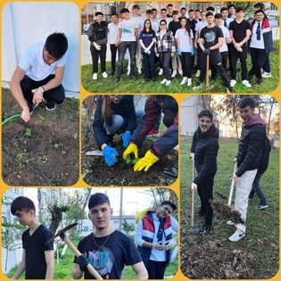

Informații despre examenele naționale și admiterea la liceul nostru.
Calendar, probe, metodologie și rezultate pentru examenul de bacalaureat. Informații pentru candidații din seria curentă și din seriile anterioare.
Detalii și documente arrow_forwardCalendarul și organizarea Evaluării Naționale pentru elevii clasei a VIII-a.
Detalii și documente arrow_forwardTematica, calendarul și condițiile de susținere a atestatului profesional la informatică pentru clasele de matematică-informatică.
Detalii și documente arrow_forwardCalendarul testării, actele necesare înscrierii și rezultatele admiterii în clasa a V-a.
Detalii și documente arrow_forwardAdmiterea în clasa a IX-a se face conform metodologiei naționale, pe baza mediei de admitere. Actele necesare și cererea de înscriere se depun la secretariatul liceului conform calendarului anunțat.
